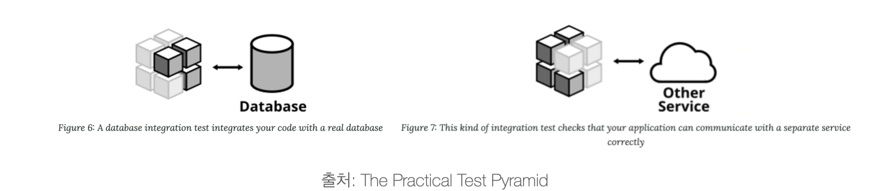

Why Test?
부끄럽지만 사실 몇 달 전까지만 해도 테스트 코드 작성의 중요성을 깨닫지 못하고 있었다.
정확하고 빠르게 기능을 구현하는 게 최우선의 목표였고, 기능을 구현하는 것만으로도 벅차다는 생각이 들었기 때문이다.
그래도 TDD가 중요하다던데…
어느 날 문득 TDD가 공부하고 싶어져서 몇 가지 문서와 책을 참고하여 공부를 했다.
그런데 테스트에 대한 내용뿐만 아니라 소프트웨어의 핵심과 그 가치를 어떻게 높일 수 있는가에 대한 내용도 알 수 있었다.
최근에 읽었던 책들과 문서들이 내가 공부하고 나아가야 할 방향을 정확히 알려주었고, 좋은 자극이 되었다.
그래서 왜 테스트가 필요한데?
나도 이 의문을 항상 품고 있었다. 아무래도 토이 프로젝트에서 내가 작성한 코드들은 결국 프로젝트가 끝나면 아무도 보지 않는 코드가 되어 신경 쓸 필요가 없었고 유지 보수할 일도 없었기 때문이다. 또한 이렇게 작은 서비스는 자동화 테스트 코드가 없어도 개발하는 과정에서 큰 불편함을 느끼지 못했다.
하지만 실전은 그렇지 않다.
실제 서비스는 점진적으로 변화한다.
고객의 요구사항은 빠르게 변화하고, 그런 요구사항들이 충족되지 않는다면 고객들이 떠나가고 서비스는 점점 잊혀져 없어지게 될 것이다.
그러니까 빠르게 변화하는 고객의 요구사항을 만족하면서 그와 동시에 안정적인 서비스를 제공하기 위해서 우리는 안정적이면서 유연하고 확장 가능한 소프트웨어를 만들어야 한다.
안정적이면서 유연하고 확장 가능한 소프트웨어
테스트 자동화가 위의 우리가 원하는 소프트웨어를 만들기 위해 가장 필요한 방법들 중 하나라고 생각하는데, 그 이유는 다음과 같다.
테스트는 버그를 방지해주고 그 결과 안정적인 서비스를 제공할 수 있도록 도와준다.
유지보수하기 용이해지고, 코드 리팩터링에 자신감을 불어넣어 더 나은 코드를 설계할 수 있는 기회를 제공한다.
테스트 종류
소프트웨어를 테스트하는 기법은 이것보다 다양하지만 내가 알고 있는 테스트는 다음과 같다.
애플리케이션의 서비스 품질 수준을 확인하는 테스트
- 성능 테스트 (performance test)
- 사용성 테스트 (usability test)
애플리케이션 또는 서비스의 동작 여부를 확인하는 자동화 테스트
- 단위 테스트 (unit test)
- 통합 테스트 (integration test)
- 인수 테스트 (acceptance test)
- 종단 간 테스트 (end-to-end test)
이 포스트에서 다루는 자동화 테스트는 테스트의 범위에 따라 분류되며 그에 따라 작성 방법도 달라진다.
테스트 피라미드는 테스트 범위를 계층적으로 표현하여 이를 쉽게 이해할 수 있도록 도와주며 각 계층마다 어느 정도의 비중을 두고 테스트를 작성해야 하는지 말해준다.
단위 테스트
단위 테스트는 테스트 피라미드의 맨 아래에 위치하는 가장 작은 범위의 테스트이며 그래서 이름 또한 단위 테스트이다.
단위 테스트의 핵심은 테스트를 실행하는데 가장 적은 비용이 들고 빠른 피드백을 받을 수 있다는 점에 있다.
일반적으로 메서드 또는 클래스 기준으로 테스트를 작성하며 소프트웨어의 아주 작은 부속품, 즉 단위가 제대로 작동하는지 확인한다고 보면 될 것 같다.
또한, 테스트에 드는 불필요한 비용을 제거하기 위해 외부의 다른 디펜던시는 배제한다.
예를 들어 다른 계층의 메서드를 호출하거나(참고: 어플리케이션 계층화 아키텍처) 서버를 작동하거나 파일 시스템을 사용하거나 데이터베이스에 접근하는 작업들은 단위 테스트에서 일어나면 안 되는 것들이다.
단위 테스트를 느리고 비대하게 만드는 외부 디펜던시는 mocking 또는 stubbing 방법을 사용하여 의존성을 제거하는 방식으로 테스트를 작성할 수 있다.
다시 말해, 단위 테스트는 철저히 격리된 테스트라고 할 수 있다.
테스트 더블(Test Double)은 xUnit Test Patterns의 저자인 제라드 메스자로스(Gerard Meszaros)가 만든 용어로 테스트를 진행하기 어려운 경우 이를 대신해 테스트를 진행할 수 있도록 만들어주는 객체를 말한다.
통합 테스트
통합 테스트는 내 애플리케이션이 인프라 서비스나 타 애플리케이션 서비스와 적절히 연동되고 의도대로 협력하는지 확인하는 테스트이다.
예를 들어 데이터 베이스에서 데이터를 Read하거나 Write하는 작업, 타 애플리케이션의 API를 호출하는 작업, 파일 시스템을 사용하는 작업 등을 테스트 범위에 포함한다.
단위 테스트보다 테스트 범위가 넓은 만큼 단위 테스트에서는 찾을 수 없는 버그를 발견할 수 있다는 장점이 있다.
하지만, 단위 테스트보다 느리고 신뢰성이 떨어질 수 있으며(더 많은 코드를 테스트하기 때문에) 범위가 넓어 어디서 에러가 발생했는지 확인하기 쉽지 않아 디버깅하기 힘들다는 점도 있다.
인수 테스트
인수 테스트는 소프트웨어 컴포넌트의 비즈니스와 연관된 테스트이다.
사용자 스토리(시나리오)나 유스 케이스(행위자가 관심을 가지고 있는 유용한 일을 달성하기 위한 시나리오의 집합)에서 출발하며, 개발자 관점의 내부 구현(또는 내부 코드)이 아닌 사용자 관점에서 어떤 동작이 외부에 드러나야 하는지 기술하는 블랙박스 테스트이다.
실제 사용자 관점에서 테스트를 할 때는 주로 종단 간(End-to-End) 방식을 이용해서 확인한다.
인프라 서비스나 타 애플리케이션 서비스 등 외부 디펜던시도 함께 테스트한다는 점에서 통합 테스트와 비슷하지만, 인수 테스트는 일반적으로 given / when / then 형식을 따르는 시나리오가 정상적으로 동작하는지를 테스트하기 때문에 엄밀히 말하면 다르다.
결론
테스트 기법은 무엇을 어떻게 테스트하는가에 따라 달라지는데, 사실상 이 범위가 교과서처럼 딱 정의된 것도 아니고 사람들이 다 같은 규칙을 지키는 것도 아니라서 나머지는 해당 소프트웨어를 개발하는 개발자의 몫이라고 본다.
그래도 각각의 테스트에 대한 핵심 개념을 알고 있으면 자동화 테스트를 작성하는 데에 있어서 좋은 길잡이가 되어 줄거라고 생각한다.
아무튼 결론은… 자동화 테스트를 통해 더 나은 소프트웨어를 만들고 서비스의 품질을 높이도록 하자!
참조 문헌
The Practical Test Pyramid
What’s the difference between unit, functional, acceptance and integration test?
Unit Testing Principles, Practices, and Patterns
마이크로서비스 패턴, Microservices Patterns